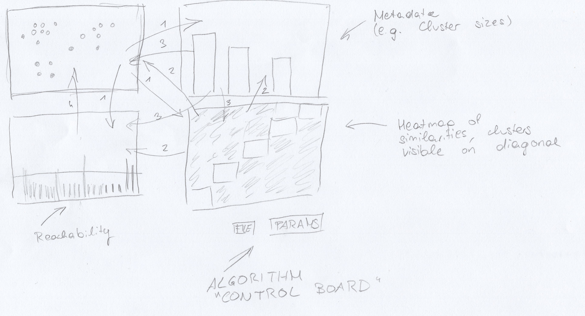
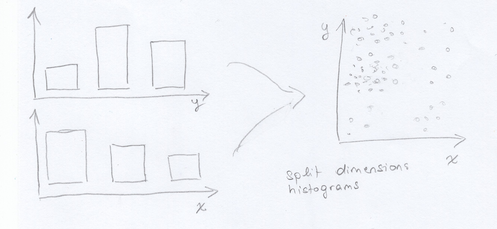
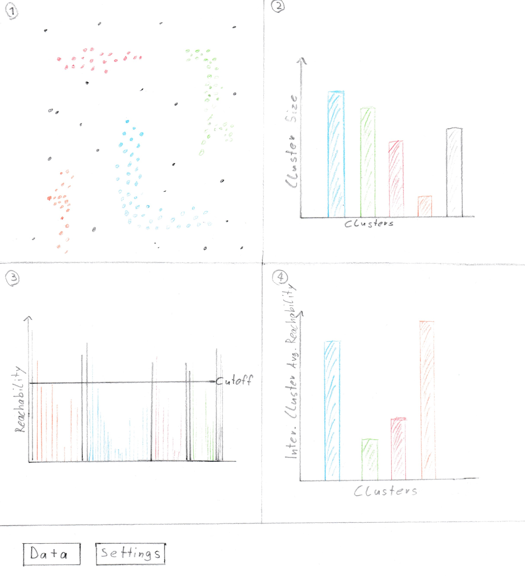
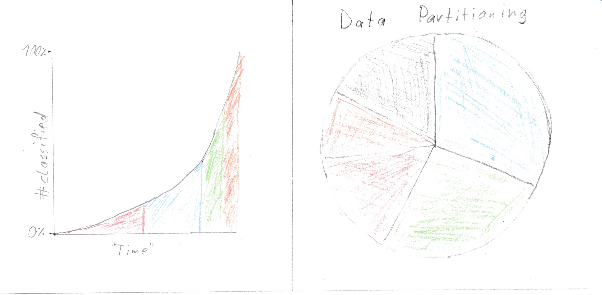
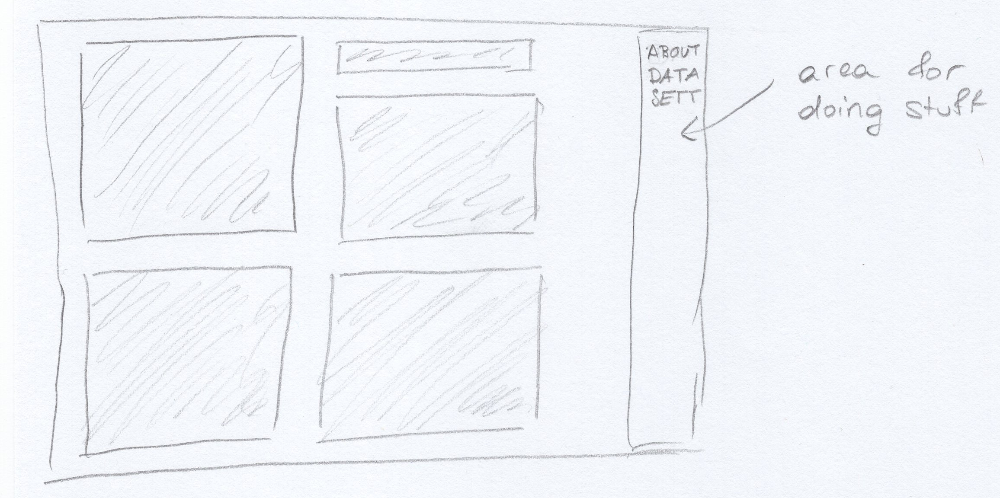

OPTICSvis: clustering, visualized
Milestone 1
Introduction
Our project idea is to visualize the resulting data from running the OPTICS algorithm on a given data set. OPTICS does not generate a simple mapping of points to a cluster ID, but rather outputs a list of reachability data—that is, the length (given by, e.g., the euclidean distance between those two points) that the algorithm had to jump from a given point to another. Short distances are preferred by the algorithm, so a series of short jumps likely marks a cluster.
However, in the end the user is looking at nothing but numbers and has to discern the patterns in the data himself. As such, the first step after running OPTICS is usually to draw a bar chart, which makes this task much easier.
As such, visualization is arguably already a core component of cluster analysis when using OPTICS. Why not allow for further manipulation of the algorithm, allowing to specify parameters such as the minimum point size to qualifiy as a cluster, or the cutoff distance that is applied onto the reachability data to define the actual clusters?
Furthermore, OPTICS is inherently capable of producing hierarchial clusterings, but this information is oftentimes discarded in favor of a simpler representation. Procuring an visualization method that is still simple, but allows for evaluation of hierarchial clusters is surely a worthwile undertaking, and one that we will strive for.

Why do this and to what scope?
Not many tools exist that take on this subject, although notable projects exist, especially Clustervision [1] and a DBSCAN visualization that we found [2], the latter of which only visualizes how DBSCAN goes about finding clusters (i.e. shows the epsilon neighborhoods). It is notable that DBSCAN results in a simple partition of points into clusters along with some metadata (e.g. core points versus edge points).
Clustervision is an especially powerful tool and takes on a multitude of algorithms (including OPTICS) and offers additional tooling like dimension reduction using TSNE. One of the core tasks of this tool is to validate the results of the algorithm—i.e. enable the user to check out the features of points in a cluster and see the relations between data that caused them to be classified into the same cluster.
This is something that we do not want to do, as we strongly feel that this is out of bounds for us. We want to make an example of simple data (i.e. low dimensional and spatial, a list of real points) and how the results given by OPTICS relate to this data set and the used settings, and show the partition derived from the reachability data.
Project details
- Project type
- Design study
- Group
- Tasks
-
- Visualize data (as point clouds)
- Visualize OPTICS results in an interactive and accessible way
- Experiment with different settings for the algorithm (educational aspect)
- Users
-
- Students interested in the algorithm
- Teachers for presentation purposes
- Scientists that just want something to quickly use density based clustering
- Scientists that want to see if this algorithm fits their requirements
- Dataset
- User provided or predefined points
Preliminary Project Solution
A preliminary solution could consist out of a scatter plot visualizing the input data, a bar plot visualizing the reachability data, as well as a heat map that visualizes similarities. Another view may be used to show miscellaneous metadata such as the number of points per cluster. A small dashboard is provided to change algorithm parameters.
Separation of Tasks
| Sonja | Christian | |
|---|---|---|
| Website (Content) | 85% | 15% |
| Idea | 15% | 85% |
| Solution Sketch | 50% | 50% |
References
Milestone 2
Chart Pool
Our data is twofold, first: the data to be clustered, and then the actual output (along with metadata that is derived from the output).- Scatter plot
-
Since we've decided to deal with exclusively real-valued data points, a scatter plot is a natural visualization choice. However, especially with excessively many points, scatter plots may start to become unwieldy, and, especially considering svg-drawing in the browser, slow.
- Bar chart (split dimensions)
-

An image is worth a thousand words
We feel that given very large data sets, this might be an interesting way to aggregate it. It works as follows: the dimensions are split up into two (or however many dimensions there are) histograms that bin the number of points given in some range. That way the data distribution is visualized.
To show the correlation between the two dimensions, we propose that we add a color cue. On hovering a bar, the bars of the other dimension will change color to show the distribution of the points that were put into the corresponding bin, e.g. turn blue to show that few points of the selected bin were put into the other dimension's bin or green for quite many.
However, this would at best provide a rough overview over the data distribution (which is already a pretty sweet deal when you're dealing with Big Data, but we probably won't) and might be alienating to any users, who probably expect a simple scatter plot instead.
- Heat map (similarities)
-
This chart displays the points in the output order on both axes and maps the colors to the similarity (e.g. inverse distance) of the points. This way, clusters are visible along the diagonal. Hierarchial structures are also visible.
- Heat map (jump distances)
-
An alternative application of a heat map would be to sort of merge the scatter plot with a heat map, dividing the area into small rectangles and coloring them according to the jumps that were made between points---with small jumps being high similarity. This way, we actually display the densities of certain regions, which are already enough to reveal any clusters, and get rid of the actual points (which may be toggled on demand) to avoid clutter in case of large data.
This may, however, be hard to implement---or at least implement so that it works well.
- Scatter plot with jump paths
-
Another spin on the scatter plot would be to show the actual jumps that the algorithm makes between points, like it is done in the graphic at the top of the page. This would illustrate how the algorithm works and provide a connection to the reachability data.
- Bar chart (reachability)
-
Although we think that bar charts = boring charts, we think that the reachability is best visualized using, well, bar charts. For one part, they allow for easy comparison of reachability lengths, as the height of the bar immediately corresponds to the length of the jump, so no thinking required.
Furthermore, bar charts have always been used to visualize the reachability, so it has become canon. Someone who is well-aquainted with the algorithm might be thrown off if we used something different.
- Bar chart (cluster sizes)
-
It may be desirable to also show the make-up of the data using the different cluster sizes. This can be done using a bar chart.
- Bubble chart (cluster sizes)
-
It is also possible to display the cluster size information in a more fun way by using a bubble chart. However, we feel that the use of spheres may be a bad choice---historically, the OPTICS algorithm was a great idea because it is able to find clusters that are NOT sphere shaped, by looking at densities. A bubble chart looks like clusters, so it may be confusing to imply that the clusters in the data are somehow also spherical.
- Area chart (clusters with different cutoffs)
-
The cutoff distance is the parameter to play around with, and can drastically alter the resulting clustering. As a reminder, the cutoff distance mandates which points (whose jump distances all fall below the cutoff) get lumped together in a cluster.
We could draw an area chart over different cutoff distances and show how the clusters start to fall together given larger cutoffs. This could then be used to indentify critical cutoffs, i.e. after how large a cutoff the result starts to be no longer useful. This also tells a story on graph hierarchies, with larger cutoffs showing clusters that would be further up on the dendogram.
This could also be used to display effects of different parameters, e.g. the min points parameter. It could also be altered to only show the ratio between points classified as noise versus points classified as cluster points.
- Dendogram (hierarchial clusters)
-
A dendogram is the weapon of choice when wanting to show hierarchies in a clustering. Here, we could define different cutoffs for sourcing the data to display, although this might be tricky to get to work right on many different data sets. This could be solved by enabling user intervention, i.e. having the user pick cutoffs (which is also a great thing to play around with).
The implementation of this might be a little more involved.
- Line chart (points classified over time)
-
It might be useful to show the progression of the algorithm over time? This could also give a feeling for the algorithmic complexity of the algorithm, and how different parameters affect its runtime in contrast to the amount of points for a specific data set. We could also use an area chart because line charts tend to look flimsy.
Mockup 1

The charts [1] and [3] are necessary in each of our visualizations since those are fundamentally important
for understanding the algorithm. The right hand size charts can be exchanged for other plots that show
different meta information.
Chart [1] is needed because it is the only reasonably viable option to actually show the data, that is
being worked on. Without this chart there is no way to intuitively compare the algorithm with what a
human would conceive as clusters.
Chart [3] is needed because this is the output of the algorithm. If someone later on wants to use
the algorithm the only thing they will get as output is the data visualized in this chart. Since the
whole point of our implementation is to explain the algorithm and visualize its results, it is essential
to show this data. All other charts are based around the idea to make this data more understandable.
- Shows the points with their cluster coded as color
- Shows the clusters with the amount of points contained, as well as the noise points in gray.
- Shows the Reachability Plot with the reachability distance for each point and the cutoff line that defines clusters
- Shows the average reachability distance within the clusters, lower meaning a denser cluster
- When mousing over any of the bar charts the points belonging to the according cluster will be highlighted in all other charts, mousing over points has the reverse effect.
- Zooming is enabled inside of the scatter plot.
- Clicking on a bar of a bar chart hides other points in the scatter and reachability plot and gives the other bars transparency.
- The cutoff line can be dragged to redefine clusters. All charts and data will be reevaluated and changed accordingly.
- The "Data"-Button lets you copy text into a text box, which gets interpreted and used as data for the algorithm.
- The "Settings"-Button lets you define the Epsilon and MIN-Points for the algorithm as well as define a value from which on distances are being handled as if unreachable ("Context Infinity"). This value is therefor also the upper bound for the reachability plot.
Advantages:
- Nicely shows the points
- Cluster information can be seen easily
Disadvantages:
- Difficult to correlate points with reachability value
- May produce ugly visualization with bad parameters
Mockup 2
Charts [2] and [4] (Mockup 1) may be swaped out for those or the heat map(sketched in m1).
- Shows classification progress over time.
- Shows the clusters with the amount of points contained, as well as the noise points in gray.
Advantages:
- (chart 1) Shows algorithm progress over time
- (chart 2) Data partitioning(result) may be easy to recognize
- (heat map) Can reduce the dimensionality to 2 if the data set has more than 2 dimensions and visualizes nicely cluster and sub cluster structures without need for a cut off line
Disadvantages:
- (chart 1) It is difficult to predict how useful progress over time is?
- (chart 2) A bar chart may be better fit and more readable
- (heat map) May need some thought to be understood
Mockup 3

The details on this mockup are not quite accurate but give a rough idea of how the results for a given data set may look like.
For this mockup, we have picked 5 charts from the chart pool above, namely a density map that also shows points (these can be toggled off to decrease clutter), a scatter plot that also displays the jumps between points that the algorithm made, the good old bar chart that shows the reachability distance in the order that the algorithm generated them, as well as an area chart that gives an overview over how the clusters change with increasing cutoff distances, and another simple bar chart that shows cluster sizes (or noise, which are aggregated into one pseudocluster) by number of points.
The charts are enumerated starting at the top left and clockwise.
- Density map
-
This view shows a density map. Since OPTICS is a density-based clustering algorithm, displaying the densities is a natural choice.
It might be desirable to view the actual points, however, so an option for toggling the data points (as in a normal scatterplot) should be included. These points could then also be colored to correlate with the other views.
- Bar chart (cluster sizes)
-
This view shows the cluster sizes. The colors are picked to relate to the other views.
- Scatter plot with jump paths
-
This view shows the data points along with the paths that correlate to the jumps displayed in the reachability bar chart. The jumps are colored according to the cluster, according to the colors of the bar chart and other views. Hovering a bar of the reachability chart should highlight the corresponding edge.
- Area chart (different cutoffs)
-
The area chart shows how the ratio of the different clusters change as the cutoff distance increases. This shows some hierarchical information as only adjacent clusters merge. The effect can be replicated by dragging the cutoff bar on chart 5.
- Bar chart (reachability distances)
-
This view shows the reachability distances (the lengths of the jumps) in the order computed by the algorithm. This is a staple OPTICS chart and would probably be included in even the most avant garde OPTICS visualizations.
A bar can be used to change the current cutoff distance. Multiple cutoff bars are also possible, which would then reveal hierarchical cluster structures (e.g. as shown in the density map, with denser inner regions (cores) and less dense outer regions ("suburbs")).
User interface
The user interface will consist of a side bar on the right side with three sections (buttons) to press. On press the bar will expand a little and show general information about the algorithm (about), or show a text field for pasting data (data), or show settings for the algorithm (in the form of sliders for e.g. cutoff distance, most likely).
Visualization techniques
Most of the visualization techniques that we picked can find use in any constellation of charts, so we will cover them in a general manner.
- Aggregation
-
Clustering is a form of aggregation, so any clustering visualization will make use of aggregation as soon as the points are assigned their cluster ID and this is somehow visualized, as the points are then aggregated into groups defined by their cluster ID. In our case, the cluster membership is communicated using colors.
- Heat maps
-
A clustering can be visualized by placing similar values in close proximity and using their similarity as an index into a color scheme. This is displayed in mockup 4.
We are unclear on the technicalities, but the density map of mockup 3 could possibly also be considered a heatmap mapping point densities to colors.
- Tooltips
-
We will be using tooltips to convey exact data---e.g. a bar chart depicting cluster sizes can only convey approximate data (unless you reverse-engineer the formula for the rectangle size and count the pixels somehow), but hovering the bar will create a popup that will give the exact size of the cluster in question.
- Brushing & Linking / Context and Focus / Zoom
-
We plan on incorporating especially linking and having other views react to selections made in different views, e.g. highlighting a reachability bar in the reachability distance bar chart will highlight the corresponding jump-path in the scatter plot with jump paths (see mockup 3).
Brushing can be used on either the scatter plot (selecting a group of points) or the reachability distance bar chart (selecting also a group of points, but in a given order). The first variant would update the other views to only show data relating to the points that are contained in the selection (possibly prompting expensive recomputation), while the second variant would zoom in on the scatterplot, as consecutive points in the bar chart are expected to be in close proximity to each other.
This behavior somewhat resembles the context and focus pattern, with e.g. the reachability acting as a context and the other views reacting to focus the selection.
- Filter
-
Selecting a cluster (in the cluster size chart) will all relevant views focus on data pertaining to only this one cluster. This overlaps somewhat with the previous techniques.
Scenario of use
A typical scenario could be a teacher at a university, wanting to show how OPTICS can be used. For this said teacher would first enter data in the corresponding menu and edit the algorithm settings. Next the data is shown and the different charts show the clusters and some meta data. With those the reachability plot, which usually is the only output, can be further explained for better understanding. Additionally the parameters and cutoff line can be adjusted to see how those affect the output.
An even more concrete step by step way to use this for research could be:
- Click "Data" Field
- Load in some data
- Go to "Settings"
- Define Eps/MINPts/"Infinity"
- Show the scatter plot (the classification may not be nice)
- Look at the heat map, if it looks fine change cut off line, otherwise change settings
- Further tweak settings and/or cut off
- Analyse cluster meta information (e.g. cluster size)
- Think about how good this algorithm worked for given data set / how content you are with the results
- Rerun experiments / Decide if this algorithm is fit for given problem
- Use gained knowledge as you want
Implementation details
We will be using d3.js. We have tried it out (obviously) and have a rough idea of what it can do, and think that our ideas can be easily realized using it.
Milestones
Milestones are sequential in nature (they do build up on each other), but work will probably not stop immediately at the due date but fade out. It might be necessary to go back to work done for a previous milestone.
- Finalize ideation phase
-
Pick best parts of all mockups, combine into one and further flesh out. Think harder about feasibility (i.e. how hard to implement).
Assigned to: all
Due: 23rd November
- Preparation (non-vis parts)
-
Implement the OPTICS algorithm in a variant that supports everything we need for visualization (data collection, data parsing, etc.). Set up a basic skeleton including JS and HTML and UI parts.
Assigned to:
- Algorithm: Christian
- Skeleton: Sonja
Due: 26th November
- Non (or hardly) interactive visualization
-
Implement all views in a static way, without filtering and linking and stuff. Obviously keep in mind that this will later need to be implemented and take precautions to make this as painless as possible, don't just hamfist it like a crazed brogrammer.
Assigned to:
- Half of views: Christian
- Other half: Sonja
- Pick pretty colors and stuff: Sonja
Due: 29th December
- Interactive elements
-
Add interactivity, i.e. draggable elements, linky and brushy things, zooming. Finish the UI.
Assigned to:
- Zooming and Dragging: Christian
- Linking and Brushing, UI: Sonja
Due: 3rd December
- Testing, Debugging and adding some polish (e.g. usability)
-
Since interactive parts are almost guaranteed to be weird and buggy at first, test, test and then test some more. Maybe let strange people play with it. Get feedback and try not to argue with them.
Assigned to: all
Due: 10th December with days to spare
Maybe's, stretch goals
- Maybe let the user select a start point for the algorithm to explore its relevance
- Maybe let the user define a select next logic (first/last unexplored,random, min/max in some dimension)